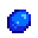

As Lavouras são plantas que crescem de sementes para
serem colhidas com o proposito de gerar lucro,
alimento
ou presentes.Geralmente cada lavoura varia por estação.
Quando as estações mudam (após dia 28)
os cultivos irão
murchar e morrer.
| Foto | Nome | Preço | Tempo para Crescer | Preço de venda (qualidade ouro) |
|---|---|---|---|---|
 |
Morango | 100 ouros | Total: 8 Dias | 180 ouros |
 |
Vagem | 60 ouros | Total: 10 Dias | 60 ouros |
 |
café | 2 500 ouros | Total: 10 Dias | 22 ouros |
| Foto | Nome | Preço | Tempo para Crescer | Preço de venda (qualidade ouro) |
|---|---|---|---|---|
|  | Mirtilo | 80 ouros | Total: 13 Dias | 75 ouros |
 |
Carambola | 400 ouros | Total: 13 Dias | 1 125 ouros |
 |
Lúpulo | 200 ouros | Total: 11 Dias | 37 ouros |
| Foto | Nome | Preço | Tempo para Crescer | Preço de venda (qualidade ouro) |
|---|---|---|---|---|
 |
Abóbora | 100 ouros | Total: 13 Dias | 480 ouros |
 |
Oxicoco | 240 ouros | Total: 7 Dias | 112 ouros |
 |
Cereja de Joia Doce | 1.000 ouros | Total: 24 Dias | 4.500 ouros |
Diferente das demais, no inverno não é possível plantar vegetais normalmente, sendo necessário uma estufa. Nesse caso, a melhor planta que pode ser plantada é:
| Foto | Nome | Preço | Tempo para Crescer | Preço de venda (qualidade ouro) |
|---|---|---|---|---|
|
Oxicoco | 240 ouros | Total: 7 Dias | 112 ouros |